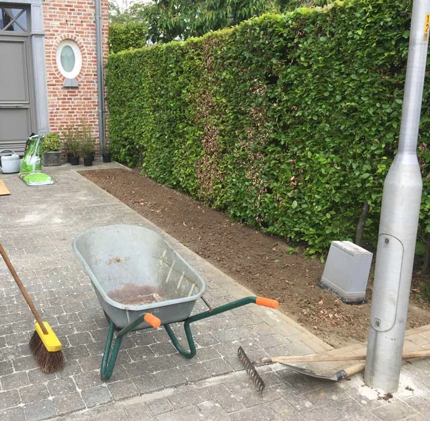
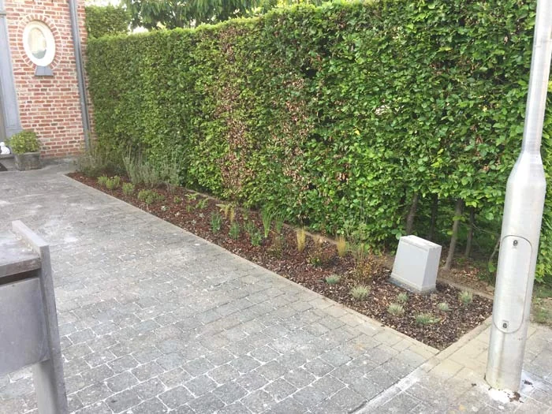
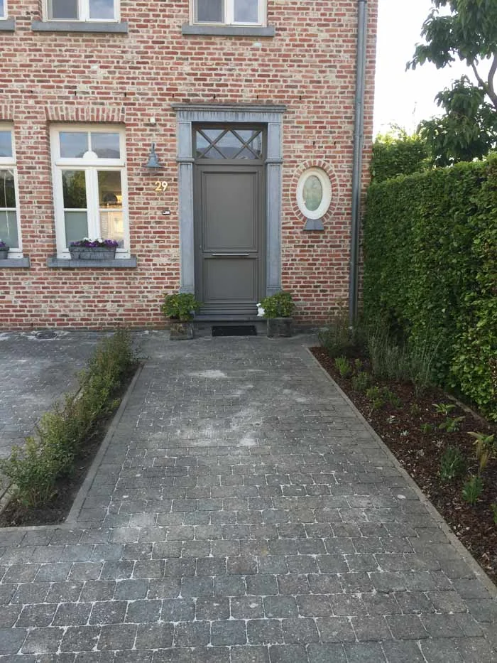

Grondvoorbereiding
- Spitten, frezen en egaliseren
- Drainage en afwatering
- Compost en teelaarde aanbrengen
Grond bewerken, frezen en fijnmaken: we leggen de basis voor jouw nieuwe tuin.





Een nieuwe tuin begint bij een bruikbare ondergrond en een invulling die bij je wensen past. Boom & Tuinwerken Mylemans voert grondvoorbereiding, gazonaanleg, aanplantingen en het plaatsen van afsluitingen uit. We bespreken of je een volledige aanleg of een deel van de tuin wil aanpakken.
Voor gazonaanleg bekijken we de ondergrond en kiezen we samen tussen zaaien en graszoden. Bij aanplantingen houden we rekening met de standplaats en het gewenste onderhoud. Bestaande bomen of stronken kunnen invloed hebben op de voorbereiding: bekijk ook boomwerken en stronkenfrezen.
Vanuit Vremde, deelgemeente van Boechout, werken we in de volledige provincie Antwerpen. Bekijk ons werkgebied en alle gemeenten.
De oppervlakte, de toestand van de bodem, het benodigde grondwerk en de gekozen materialen bepalen samen de prijs. Ook de bereikbaarheid, afvoer of aanvoer van grond, soort beplanting en uitvoering van de afsluitingen spelen mee. Beschrijf de gewenste onderdelen en je budgetkader in de aanvraag, zodat we een gerichte offerte kunnen bespreken.
Ja. Je kan grondvoorbereiding, een nieuw gazon, aanplantingen of afsluitingen als concrete opdracht bespreken. Vermeld welke bestaande delen je wil behouden.
Graszoden geven meteen een bedekt oppervlak, maar vragen nog verzorging om aan te slaan. Bij zaaien groeit het gazon geleidelijk. De geschikte keuze hangt af van de ondergrond, planning en het gewenste gebruik.
Geef de gemeente, de oppervlakte en de gewenste onderdelen door. Vermeld de doorgang naar de tuin, de bestaande situatie en eventuele plannen of schetsen die je al hebt.